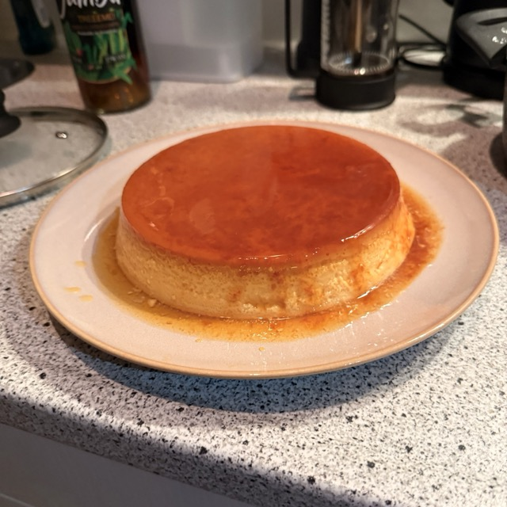

ingredientes
- 1 lata de leite condensado (395 g)
- 395 ml de leite integral
- 2 ovos inteiros
- 2 gemas
- 150 g de açúcar
- 60 ml de água quente
preparo
- Coloque o açúcar em uma panela pequena (cerca de 1,5 L) em fogo médio e deixe derreter até atingir uma cor âmbar.
- Adicione cuidadosamente a água quente e mexa até dissolver os torrões e formar um caramelo líquido.
- Bata o leite condensado, o leite, os 2 ovos e as 2 gemas no liquidificador por aproximadamente 30 segundos. Não bata excessivamente para evitar incorporar muito ar.
- Passe a mistura por uma peneira e despeje-a por cima do caramelo.
- Cubra a panela com papel-alumínio e coloque-a dentro de outra panela maior.
- Encha a panela grande com água, chegando aproximadamente à metade da altura da panela menor.
- Cozinhe em banho-maria por aproximadamente 1 hora e meia. Se necessário, reponha a água durante o processo.
- Retire do banho-maria, deixe esfriar e leve à geladeira por pelo menos 6 horas, idealmente de um dia para o outro.
- Para desenformar, passe uma faca fina nas laterais e aqueça rapidamente o fundo da panela sobre a chama baixa para soltar o caramelo. Vire sobre um prato fundo.